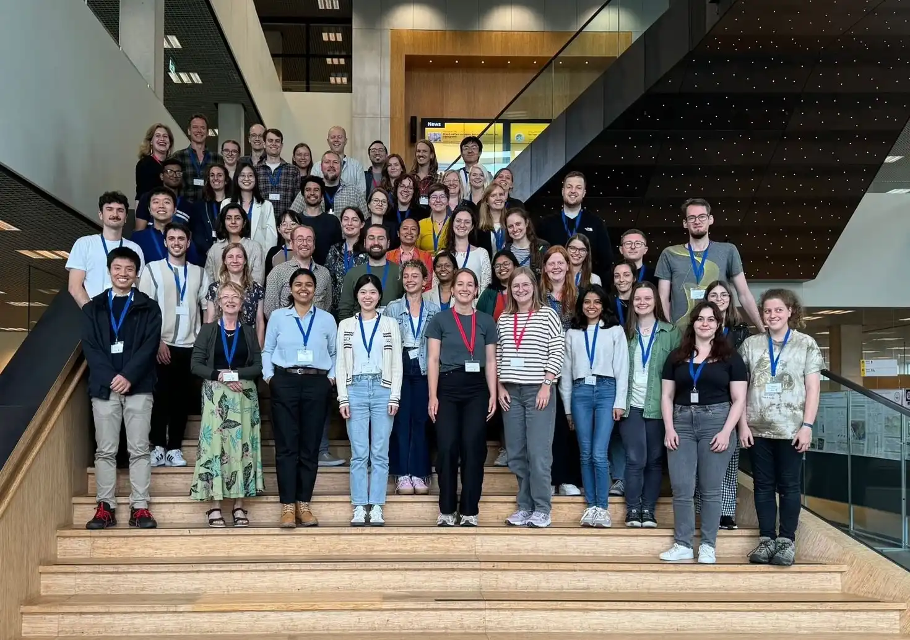
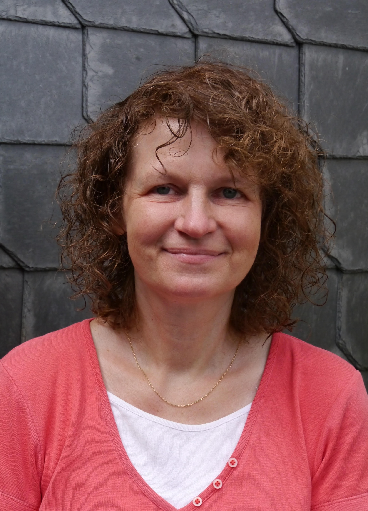
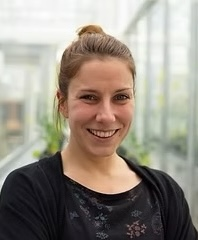
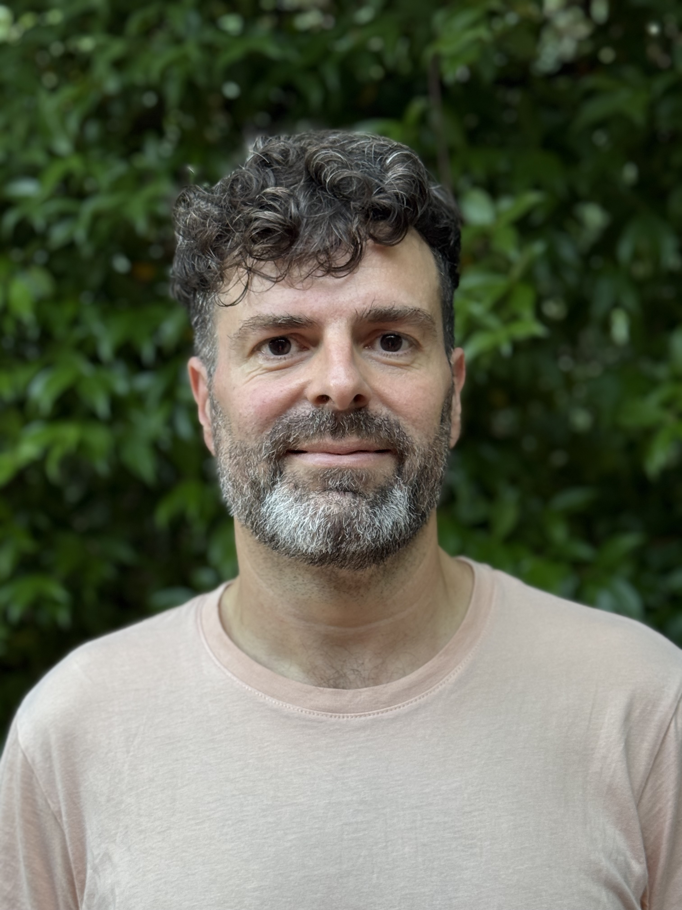

The Young Researchers'
Symposium on Plant Photobiology
Wednesday 15th to Saturday 18th April 2026
The Young Researchers'
Symposium on Plant Photobiology
Wednesday 15th to Saturday 18th April 2026
We are excited to invite you to Edinburgh, Scotland's capital city from 15-18 April 2026 for the fourth edition of the Young Researchers' Symposium on Plant Photobiology (YRSPP).
The Young Researchers' Symposium on Plant Photobiology is designed to support and showcase the cutting-edge work of PhD students, postdocs and other early-career researchers (ECRs) studying photobiology in plants and similar organisms. If this sounds like you, please save the date because we'd love to see you there!
Topics presented at previous YRSPPs have included the perception and transduction of light and circadian signals; their integration with other signalling pathways like stress, nutrient signals and temperature to modulate growth; engineering synthetic phototransduction pathways; agricultural applications and more.

YRSPP comes at a crucial juncture in the advancement of plant science research, as numerous global challenges highlight the need to harness the potential of plants. There will be six great keynote speakers in attendance, prizes to celebrate the best ECR presentations/posters, and organised social activities to promote networking and knowledge exchange leading to international cross-disciplinary collaboration and innovation.
You'll be able to register and sign up to present your work (poster, talk, or both!) later in 2025. To stay updated as we announce keynote speakers, registration deadlines and more, sign up to our YRSPP 2026 mailing list below and follow us on BlueSky, X and/or Instagram.
We have an exciting lineup of early-career and established keynote speakers this year - read on to learn more!



If you are interested in helping fund, organise or advertise YRSPP events, we'd love to work with you. Click the buttons below to find out more about getting involved with YRSPP, or send us an email and we'd be delighted to discuss your ideas!